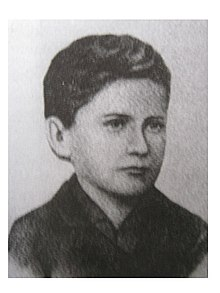
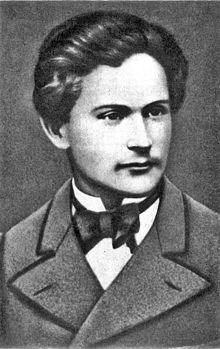

Навігація по статті
Біографія
Батьки
Іван Франко народився 27 серпня 1856 року в присілку Війтова гора (Слобода) села Нагуєвичі Самбірського округу Королівства Галичини та Володимирії
Батько, Яків Франко (1802—1865), був заможним сільським ковалем. За однією з версій, в яку вірив і сам Іван Франко, батьківський рід походив від німецьких
колоністів[10], чим пояснював незвичне прізвище, бо, мовляв, у ньому є «кавалочок німця»[11]. Проте згідно з останніми дослідженнями, родина Франків мешкала
на теренах давнього Руського воєводства ще до поділів і масового переселення туди німецьких колоністів. На відміну від них, належала до греко-католицької церкви[12].
Мати, Марія з дому Кульчицька (1835—1872), походила із т. зв. «ходачкової» (збіднілої) шляхти[13] та належала до герба Сас. Коли Іванові було дев'ять років (1865), помер батько. Мати вийшла заміж удруге за Григорія Гаврилика, який був молодший за Марію на шість років. Вітчим уважно ставився до дітей і фактично замінив їм батька. Франко підтримував дружні стосунки з ним упродовж усього життя. На 16-му році життя Івана (1872) померла мати. Вітчим одружився вдруге[14].
Дитинство
Попри те що рано залишився сиротою, Іван Франко здобув ґрунтовну освіту. «Школу Франко перейшов довгу і хорошу» (М. Зеров). У 1862 році батько віддав Івана до т. зв. тривіальної (початкової) школи в сусідньому селі Ясениця Сільна, звідки родом була дружина Якова Франка — Іванова мати. У 1864—1867 роках Іван продовжив навчання в т. зв. нормальній Головній міській школі отців василіян у Дрогобичі (з німецькою мовою викладання), а 1867 року вступив до Дрогобицької реальної гімназії ім. Франца-Йосифа (яка саме тоді переходила на польську мову навчання).
І. Франко писав про своїх учителів із гімназії у творах «Спомини із моїх гімназійних часів», оповіданні «Гірчичне зерно» та інших. Згадує Іван Франко о. О. Торонського, К. Охримовича, Е. Турчинського, Ю. Турчинського, Е. Міхонського та І. Верхратського. Іван Верхратський, який був класним керівником Івана Франка, давав йому читати книги М. Драгоманова, П. Куліша, Т. Шевченка та інших українських письменників, організував у гімназії літературний гурток, до якого входили 12 учнів, у тому числі Іван Франко. Про початок своєї літературної діяльності Іван Франко розповів у листі до М. Драгоманова від 26 квітня 1890[15]:
 Почав я писати віршем і прозою дуже вчасно, ще в нижчій гімназії. Вплив на вироблення у мене літературного смаку мали два вчителі: Іван Верхратський і Юлій Турчинський, оба писателі і поети…Юність
1875 року закінчив Дрогобицьку гімназію імені Франца-Йосифа (нині у кількох приміщеннях цієї гімназії розташований Дрогобицький педагогічний університет). Залишившись без батьків, Іван був змушений заробляти собі на життя репетиторством. Зі свого заробітку виділяв гроші на книжки для особистої бібліотеки.
Уже навчаючись у гімназії, Франко виявив феноменальні здібності: міг майже дослівно повторити товаришам годинну лекцію вчителя; знав напам'ять усього «Кобзаря»; домашні завдання з польської мови нерідко виконував у поетичній формі. У цей період Іван багато читав: твори європейських класиків, культурологічні, історіософські праці, популярні книжки на природничі теми. Тоді ж почав перекладати твори античних авторів (Софокла, Евріпіда).
Ще в нижчій гімназії Франко почав комплектувати власну бібліотеку (налічувала майже 500 книжок українською та іншими європейськими мовами), збирати фольклор, писати вірші та прозу. Перший вірш «Великдень» (1871), присвячений батькові, на жаль, не зберігся до нашого часу. 1873 роком датуються перші збережені поезії («Пісні народнії», «Моя пісня», «Котляревський» та ін.) й драматичні спроби літератора-початківця («Юґурта», «Ромул і Рем»).
Університети
1875 року, закінчивши Дрогобицьку гімназію з похвальним свідоцтвом зрілості, Іван Франко вступив на філософський факультет Львівського університету, де вивчав насамперед класичну філологію та українську мову й літературу. Брав участь у діяльності студентського громадсько-культурного товариства москвофільської орієнтації «Академический кружок», був його бібліотекарем, друкував свої перші твори у виданні «кружка» — журналі «Друг» (з 1874), до складу редакційного комітету якого увійшов 1876 року.
Під впливом трьох листів Михайла Драгоманова до редакції «Друга» перейшов на радикально зорієнтовані світоглядні позиції. За громадсько-політичну діяльність, яку було кваліфіковано як соціалістичну пропаганду, Франко 4 рази був ув'язнений австрійською владою (у 1877, 1880, 1889 і 1892). Через перший арешт змушений був перервати навчання у Львівському університеті, проте відновив його в 1878—1879, прослухавши загалом 7 семестрів. Повну вищу освіту завершив пізніше, у 1890—1891, навчаючись у Чернівецькому університеті 8-й семестр, необхідний для докторату.
Активна діяльність
У 1870–1880-х Франко провадив активну журналістську та публіцистичну діяльність. Разом із Михайлом Павликом видавав журнал «Громадський друг» та альманахи «Дзвін» і «Молот» (усі 1878), спільно з Іваном Белеєм — журнал «Світ» (1881–1882), із гуртком львівського студентства — молодіжний журнал «Товариш» (1888). Співпрацював також у виданнях українських народовців: газеті «Діло» (1883–1886), журналах «Зоря» (у 1883–1886) та «Правда» (1888); багатьох польських і австрійських часописах.
Зневірившись у співпраці з галицькими народовцями, Франко спільно з діячами «Старої Громади» пробував заснувати власний незалежний орган («Поступ»). З цією метою двічі їздив до Києва — 1885 і 1886 року, зустрічався з громадсько-культурними діячами (Миколою Лисенком, Михайлом Старицьким, Єлисеєм Трегубовим, Павлом Житецьким та ін.). Тоді-таки познайомився і зі своєю майбутньою дружиною Ольгою Хоружинською.
1893 року у Віденському університеті під керівництвом відомого славіста В. Яґича захистив дисертацію «Варлаам і Йоасаф, старохристиянський духовний роман і його літературна історія» і здобув учений ступінь доктора філософії, однак до викладання на кафедрі української словесности Львівського університету, що звільнилася по смерті Омеляна Огоновського, допущений не був (хоча габілітація успішно відбулася 1895). Разом із дружиною Ольгою Франко видавав літературно-науковий журнал європейського зразка «Житє і слово» (1894–1897). Упродовж 1887–1897 років працював у редакції польської газети «Kurjer Lwowski» (десятиріччя «в наймах у сусідів»). За публікацію у віденській газеті «Die Zeit[de]» полемічної статті «Поет зради» (1897), що містила гострі оцінки творчості А. Міцкевича, Франка під тиском обурених польських шовіністів було звільнено з роботи в редакції «Kurjera». Того ж року через контроверсійну статтю «Дещо про себе самого» (передмову до польськомовної збірки малої прози «Obrazki galicyjskie») письменник зазнав гострої й несправедливої критики з боку галицьких народовців, найперше Юліана Романчука.
Родина
- Дружина Ольга Франко (Хоружинська) (10.04.1864 — 17.07.1941) — письменниця, перекладачка, громадська діячка.
- Син Андрій (16.07.1887 — 22.04.1913) — український філолог, етнограф, перекладач; виконував функції секретаря і помічника, опікуна батька.
- Син Тарас (9.03.1889 — 13.11.1971) — письменник, педагог, поліглот, воїн Української Галицької Армії, співробітник Інституту літератури ім. Т. Г. Шевченка АН УРСР, член Спілки письменників СРСР.
- Син Петро (21.06.1890 — 1941) — хімік-інженер, науковець, педагог, письменник, активний громадський діяч, перший український авіатор (льотчик), командир Літунського відділу УГА; співзасновник молодіжної національної скаутської організації «Пласт», депутат Верховної Ради УРСР,розстріляний за наказом наркома держбезпеки СРСР В. Меркулова.